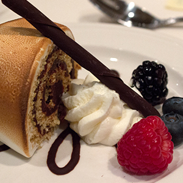
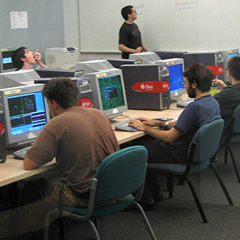
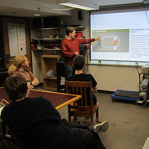
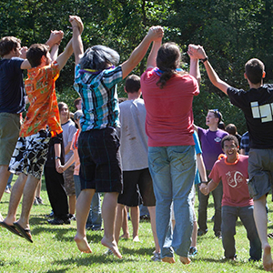

CSH isn’t just about working on projects. Our members love to engage in a variety of social activities. Many of these activities have persisted through the years to become traditions.
-
Camping
Twice a year CSH goes out on an adventure to see if we can survive for a weekend in the wild. Surprisingly, a bunch of computer nerds can thrive without electricity for a few days.
-
Freshman Project
Every year the introductory members of CSH plan and host a charity event. The events range from simple bake sales to video game tournaments and are always a blast to put on.
-

Holiday Dinner
Holiday Dinner is our annual formal dinner that takes place right before Winter Break. All of CSH gets dressed up and has dinner at a classy restaurant. This is immediately followed by another traditional event, Secret Santa, in which anonymous (and often hilarious) gifts are exchanged.
-
Intramural Sports
We participate in most of the intramural sports RIT offers, including hockey, soccer, basketball, softball, dodgeball, and volleyball. While we aren’t always the best team out there, we’re always the best-looking (with our CSH jerseys) and have the most fans cheering us on! We’ve even won quite an impressive number of trophies in the past, which are proudly displayed in our library.
-

Netrek
On Friday nights throughout the year, we invade the Computer Science labs to play an old game called Netrek. In this online team-play game from the 80’s, you control a ship flying through space, conquering planets and destroying your foes with a sophisticated array of weapons and countermeasures. Superior strategy and coordination will propel your team to victory!
-

Seminars
Any member can hold a seminar to teach others a bit about a topic of their choosing. Subjects can range from programming to juggling and everything in between and anyone can give one at any time.
-

Welcome Back
Welcome Back is a barbecue held at the beginning of each year to welcome the incoming freshman class. Traditionally, alumni come from far and wide to visit current floor members. We cook way too much food, tell stories, and participate in a variety of outdoor activities.